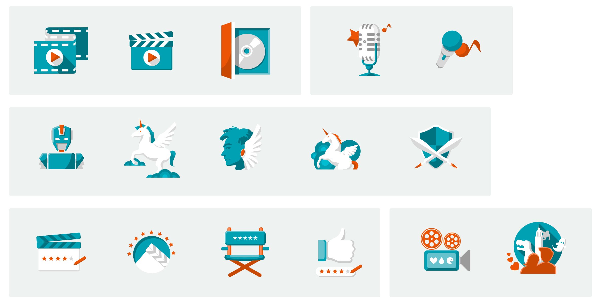
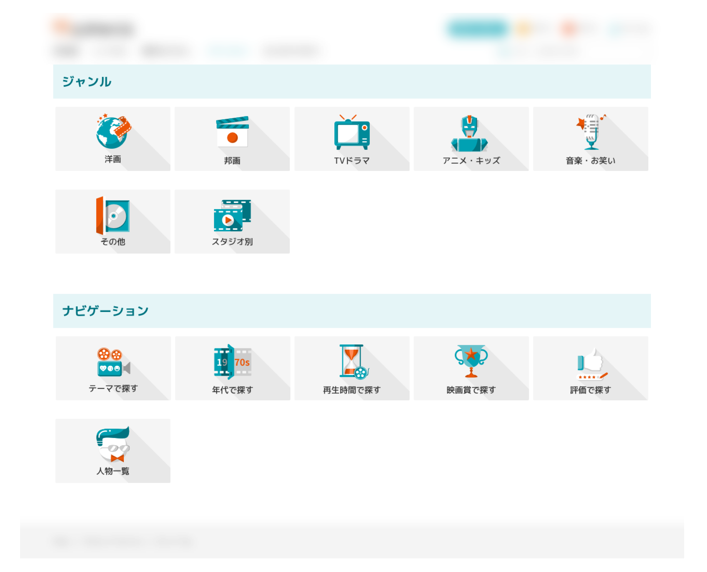

Icons Design For Streaming APP
OVERVIEW
A Japanese video streaming APP was going under an overall revamping project. As a design intern, I took the role of redesigning the icon for video genres. However, the difference of the culture cognition made it more challenging to develope a set of commonly accepted icons for oversea users.
COLLABORATE WITH
Product Manager｜Pearl
Design Supervisor｜Ludan Chuang
Design Supervisor｜Ludan Chuang
MY ROLE
Icon Design
APPROACH
Phase 1. Sketch as much as I can
To start from scratch, I dropped the laptop and picked up the pencil, in order to develop some original graphic that could touch those Japanese clients, who tended to set their bar high.

Phase 2. Collect feedback and settle the style guideline
Fortunately, there were plenty of account managers who were really familiar with Japanese culture, which made them into perfect interviewee. While narrowing dowm the design, I also need to set up the style guideline, including the limited color choices, flat design style, similar perspective, etc.

Phase 3. Deliver mock up and discuss with clients
After discussing back and forth about 3 times, I had delivered the final design and successfully builded and organized in the APP components library.

RESULT
50+ Icon sets were developed through the design process